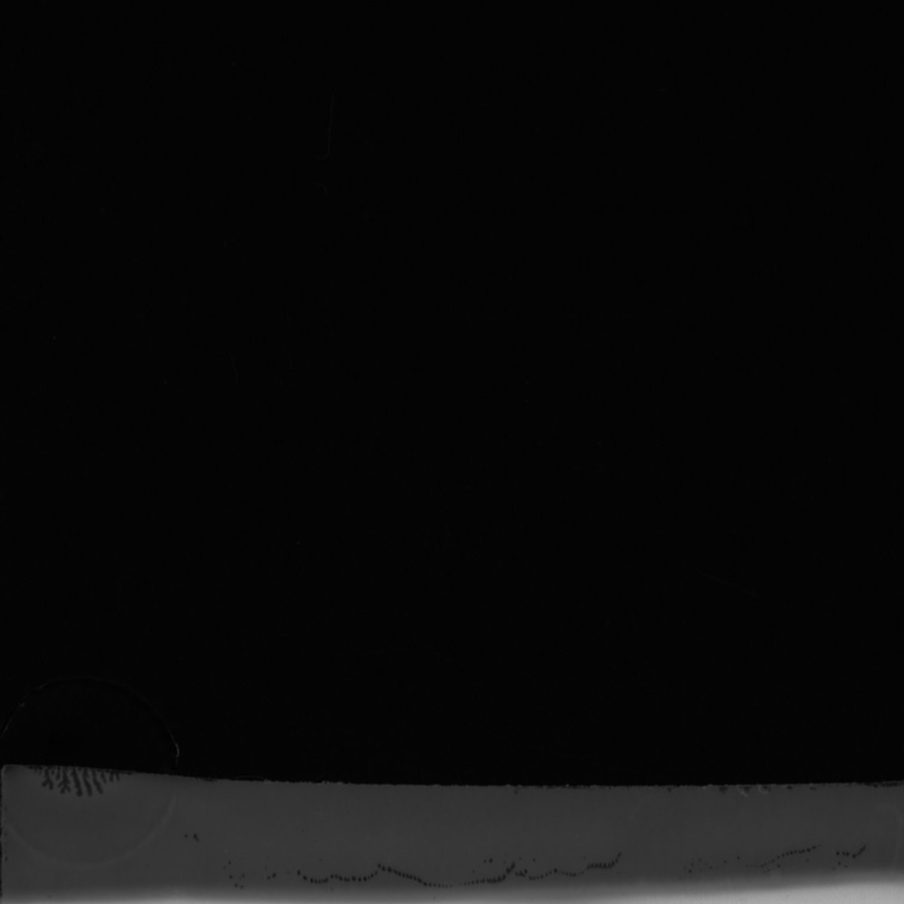

Releases

The River Of Neïd, September 17, 2020
Produced by Sukkube
Mastered by Stephan Lefrançois
Artcover by Julia Castel
Situated from miles and miles underground, the river of Neïd flows around the tower of the rabbit master to throw itself into the black sea of the North West of Neïd, a city built on ancient ruins. The ambient temperature of the river diffuses a petroleum jelly textile on its surface that enchants everyone who touches it. The river of Neïd has organisms living in it, it was nourished by the melody of sulfur particles caused by the hydraulic action of the liquid on the rocks.

(Re Edit), August 20, 2020
Redition of old tracks, 2020

Human Machine, May 12, 2020
The Human Machine is one of the demons that live in the underworld with the Crisis that is like their king. He looks human. They like to spread evil on earth by making their victims consume.

Analog Room, February 20, 2020

Identified Riding Object, 2020, music by Sojbdor, artwork by Armen Crew
In these obscure times of chaos and high-speed spreading of micro-organisms, a sound meeting takes place in secret. We've prepared you what you need to beat the troubles. Put your sights on the Armen Crew's new compilation.Six varied tracks between Electro, Breakbeat and Techno by Cryptox, Sojbdor, Alaskan Pipeline, Lemon Schaden, Mirouf and La Grande Gudule

Manifeste Triangulaire, 2020, Ep with Spatiosselet
In Manifeste Triangulaire the sound elements combine in the space of Euclidean geometry to compose a cold and industrial atmosphere. Textures shift and repeat themselves, measurements are cut out by the abrasive intervention of punctual events with very strict coordinates. The modules fluctuate and fail to cause asphyxiation of their continuity in order to allow the rotor to nestle into its stator
More about: click


Midnight Fantasy Entertainment, Night Nurse, 2019, 1st erotic visual concept with Beliz Hangun, Toulouse, France
Podcasts of Turkish music taken from films of the 70's. Night Nurse with theses K7, she puts itself in the palm of your hands so that it can complete your collection
More about: click

New Art Gothic. Cold People, July 16, 2019

Keygen Lost, 2019, music: 15:44 ask to listen
Music: Sojbdor + Orque
Artwork: Sojbdor

About Abu, July 11, 2019

Liquid Metal, 2019, music: 12:15 improv for extreme scientists in the midst of discovering a steel chromosome
Music: Sojbdor + Orque
Artwork: Sojbdor

6 Muslim Games 9, March 23, 2019